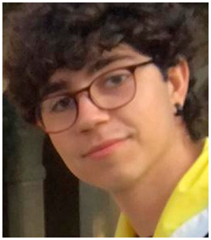

Dani Lorenzo - Coder

I’m Daniel Lorenzo, coder for Broken Engine and The Witcher: Ties of Destiny. I am a lover of fantasy and science fiction stories and tabletop games. Above all of that, though, video games have been my passion since I was very young and working in this project with my fellow teammates has been a true challenge, but the result is totally worth it!
Programming the engine has been really interesting, since we have built something pretty functional from scratch and I have learnt a lot about Visual Studio, OpenGL and Lua and how to connect that language with C++. Nevertheless, it was in my job programming the game where I had the most fun, and I really believe that is the path I want to take towards my work within the video game industry.
PROJECT CONTRIBUTION
Working as a coder I have performed my role both developing part of the Scripting System of our engine and then as a gameplay and UI programmer during the rest of the project, with my main contributions being the following:
- Scripting System: Establishment of a homogenization for all scripting functions and their distribution in different specific namespaces, apart from programming several of those functions myself. Implementation of script initialization, save and load of scripts and variable editing from the engine inspector to improve user experience, as well as drag and drop of game objects into public script variables.
- Pause Menu: Whole development of the in-game pause menu.
- Main Menu: Programming the main menu and building its scene in the engine.
- Tutorial: Developed part of the steps of the tutorial and helped merging all of them, as well as ensuring there are no drawbacks with the pause menu and the tips of the tutorial.
- Screamer Ghoul: The screamer is an agile and elusive enemy that tries to be at a certain distance from the players from where it can annoy them and constantly summon lesser monsters.
- Enemy Distribution: Tested different positions of the spawners of the second level to check the performance of the game and balancing the different waves of enemies.
- QA: Playtesting the game looking for bugs and ensuring it had the difficulty we designed and that the gameplay felt entertaining and dynamic.